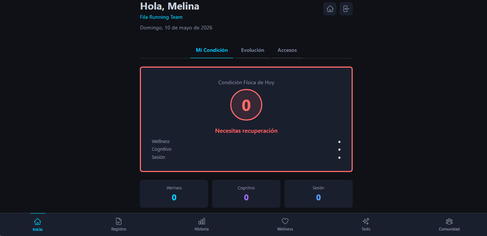
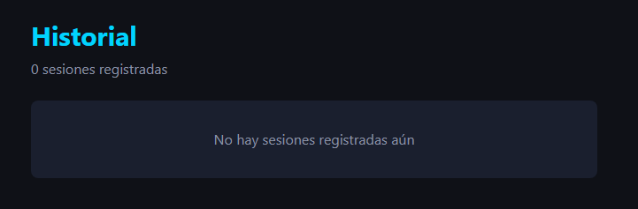
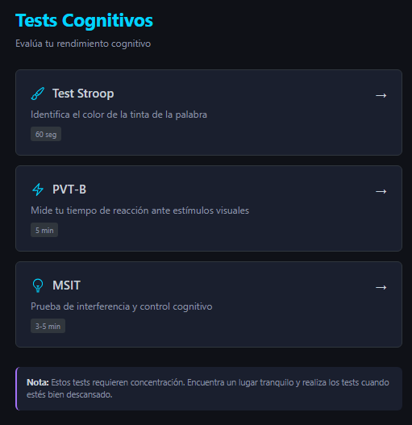
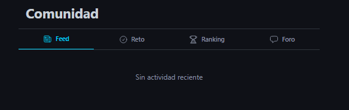
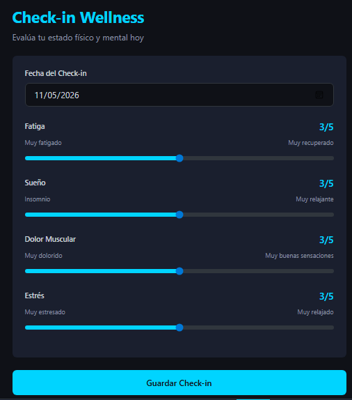
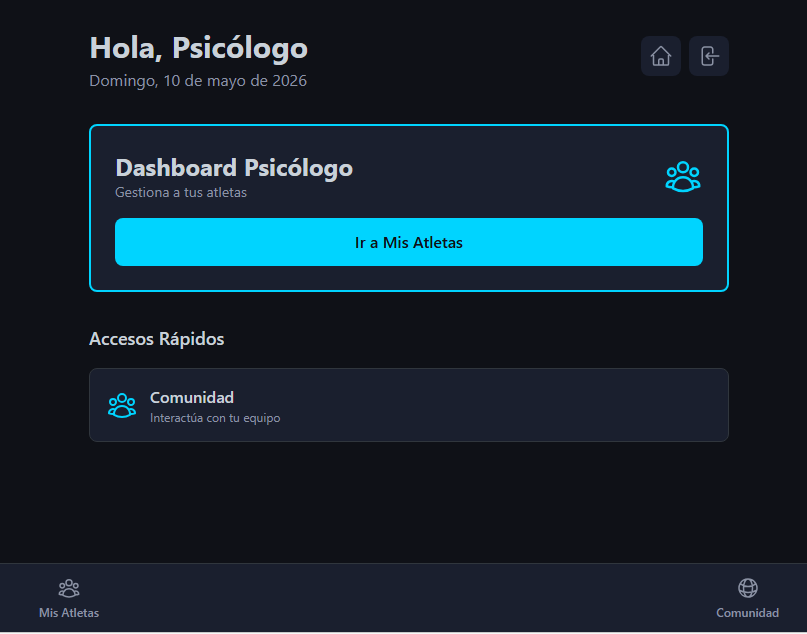
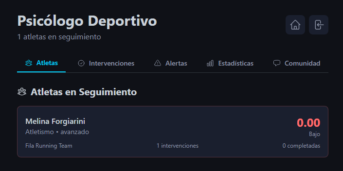

1
Acceso a tu Cuenta
Cada cuenta es personalizada según tu rol: Atleta, Entrenador o Psicólogo.

INNERLOG te ayuda a registrar, analizar y mejorar tu desempeño físico y mental a través de datos consistentes.
Cada cuenta es personalizada según tu rol: Atleta, Entrenador o Psicólogo.
Registra diariamente tu estado: fatiga, sueño, estrés y molestias.
Los datos se almacenan y el sistema identifica patrones en tu rendimiento.

Tus datos de bienestar son privados. Solo los compartimos con personas autorizadas.
Después de cada sesión, registra qué hiciste y cómo te sentiste.
Este historial ayuda a identificar qué tipo de entrenamientos funcionan mejor para ti.

El sistema organiza todos tus registros en un historial completo. Puedes ver:
Gráficos que muestran cómo cambió tu estado en los últimos 7 días.
Patrones automáticos: qué factores afectan tu rendimiento.

INNERLOG incluye pruebas diseñadas para medir tu rendimiento cognitivo y físico.
Identifica el color de la palabra mostrada. Prueba tu concentración y control inhibitorio.
Duración: 60 segundos
Reacciona lo más rápido posible ante estímulos visuales. Mide tu estado de alerta.
Duración: 5 minutos
Prueba de interferencia cognitiva y control ejecutivo. Requiere concentración bajo presión.
Duración: 3-5 minutos
Completa las evaluaciones en un ambiente tranquilo, sin distracciones. Los resultados se guardan automáticamente.

Comparte logros, motívate mutuamente y recibe apoyo de otros atletas.

Cuando ingresas como atleta, ves un resumen completo de tu estado actual.

El sistema calcula si estás listo para entrenar o competir basándose en tu historial de bienestar.
Ves rápidamente cómo están tus aspectos de Bienestar, Cognitivo y de Sesión.


El psicólogo deportivo puede ver todos los atletas asignados, revisar sus patrones emocionales y registrar intervenciones específicas.
Tu información es confidencial. Solo compartimos lo que autorizas explícitamente.
Puedes descargar toda tu información en cualquier momento. Eres dueño de tus datos.
Una vez al día es lo ideal. Hazlo por la mañana para datos consistentes. Toma 2-3 minutos.
No hay problema. Puedes agregar registros retroactivos. El sistema continúa funcionando normalmente.
Entre 3 y 25 minutos según el tipo. El sistema te indica la duración antes de comenzar.
Sí. Toda la información está encriptada. No compartimos datos con terceros sin tu consentimiento.
Sí. En configuración de tu cuenta encontrarás la opción. Usa una contraseña fuerte.
Contacta al administrador de tu equipo o usa el formulario de soporte en la aplicación.